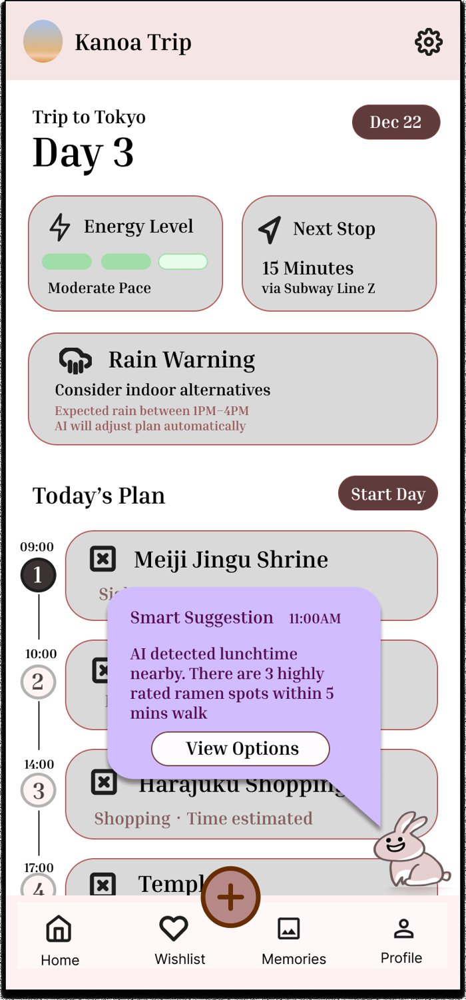
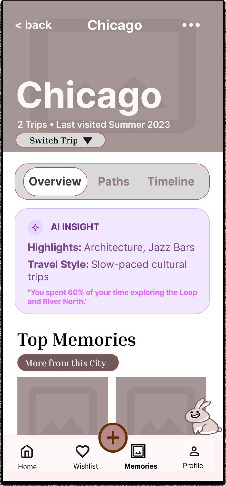
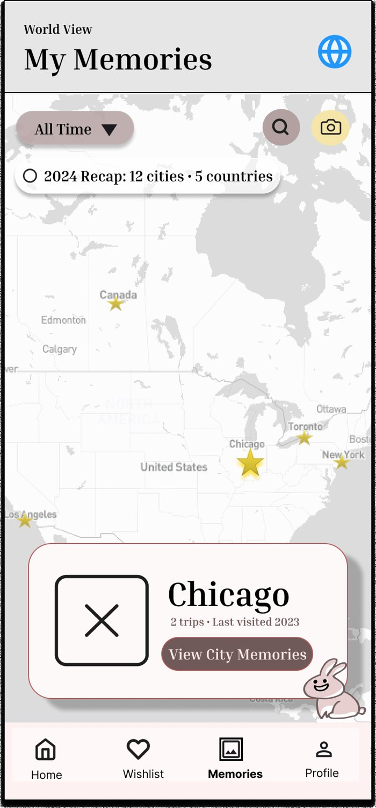
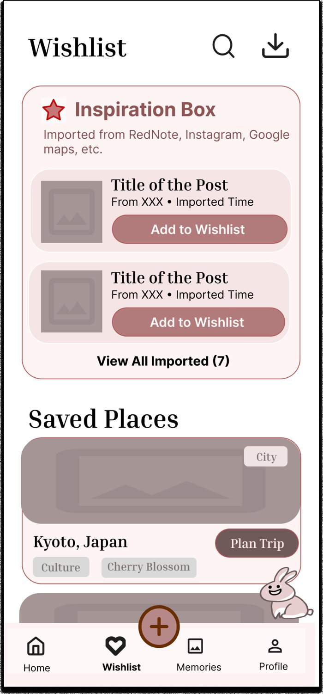
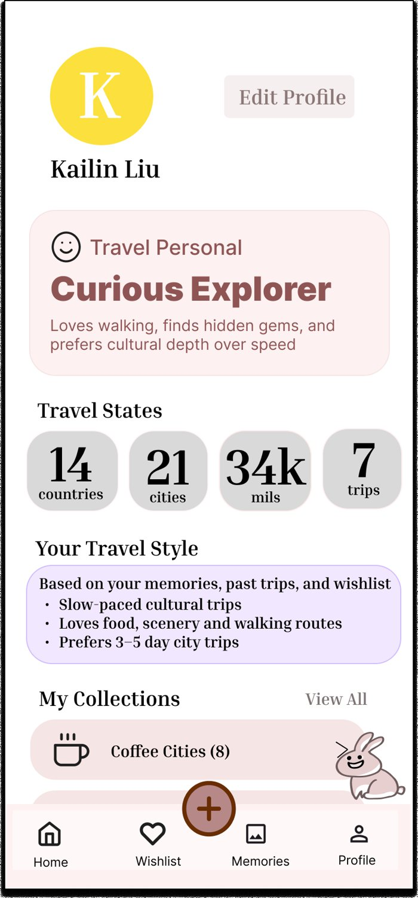

As co-founder, I led research, product definition, competitive strategy, and business-model modeling for an AI travel-planning concept — the case for building it, made before we built it.
Independent travelers planning their own trips face fragmented information, high decision costs, and generic tools that don't actually understand personal preferences. As co-founder, my job was to figure out whether that problem was real enough — and specific enough — to build a product around.
I led a research program with young, independent travelers — an 87-response survey plus 8 in-depth 1:1 interviews — bilingually distributed through university WeChat groups and intentionally skewed toward Chinese international students aged 18–24 in the U.S., the core segment I'd targeted.
That price/time bar shaped the phased go-to-market I proposed: Chinese international students in the U.S. first (bilingual, frequent travelers, already living on Xiaohongshu) → international students globally → a broader Gen Z / Millennial market.
"I like going to new places, but planning everything by myself feels like a whole project."
A tool that summarizes and filters Xiaohongshu content, combines map + timeline in one view, adapts dynamically when plans change, and reduces manual research instead of adding another app to check.
Synthesized from 8 in-depth interviews + 87-response survey · before/after-AI-assisted versions reconciled into one profile
That insight moved the product thesis from a single-purpose itinerary generator toward a full travel decision ecosystem spanning inspiration, planning, booking, in-trip execution, and memory — a materially bigger and riskier scope, which is exactly why I wanted the research in first.
Working from the reframed user journey, I helped define and continually re-prioritize the core feature set against an MVP line — separating what earns a first release from what's a later-stage bet:
I iterated onboarding flow, preference input design, and AI-recommendation logic multiple times, specifically testing how much users trusted an AI recommendation and how they wanted personalization explained to them — trust, not just accuracy, was the recurring blocker.
A few mechanics came directly out of that trust problem rather than a feature checklist:
Here's the dynamic-itinerary screen in practice — the trust mechanics aren't hidden in a settings menu, they're on the main view the traveler checks every morning:

Day view — energy pacing, weather-triggered auto-reschedule, and an AI suggestion surfaced at the moment it's useful, not buried in a menu.
The rest of the app follows the same logic — surface AI reasoning inline instead of hiding it, and keep every screen anchored to a specific decision the traveler is making:

City memory page — AI Insight summarizes travel style from past trips instead of just listing photos.

World View — visited cities plotted on a map, with a yearly recap surfaced automatically.

Wishlist — imported links from Xiaohongshu/Instagram/Maps land in an Inspiration Box before becoming a saved place.

Profile — a "Travel Personal" type and style summary derived from actual trip history, not a one-time quiz.
I broke down the product logic, UX, and business models of Google Maps, TripAdvisor, Wanderlog, and several AI-travel startups, looking for genuine white space rather than a "we do it better" pitch. The positioning that came out of it: more understanding than a traditional planning tool, more structured than a search platform, more decision-complete than a content platform.
I modeled three monetization paths, building out usage assumptions and ARPU, CAC, and LTV estimates for each to understand how pricing structure would affect conversion and long-term retention:
Separately, I built and iterated a TAM / SAM / SOM breakdown to size the realistic opportunity rather than lead with an inflated total-market number.
The product is currently at the research- and design-validation stage — no working prototype yet. The next step is low-cost beta testing through Columbia's Build Lab and student-founder network, using campus early adopters to get the first real usage signal before committing engineering resources to a full build.